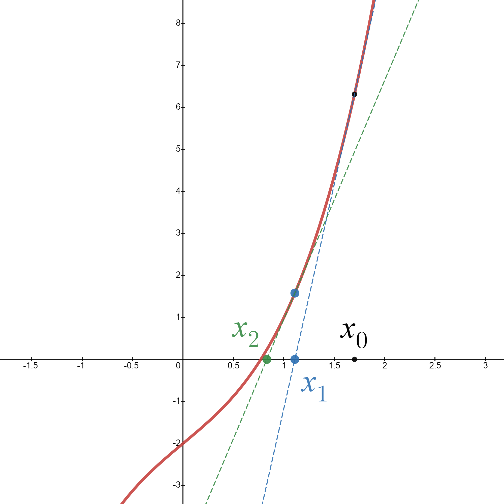

Newton-Raphson numerical method
Contents
3.2. Newton-Raphson numerical method#
3.2.1. Algorithm#
In the Section {ref}sec_dicotomia we showed a numerical method to approximate the root of a function that meets the hypotheses of Bolzano’s Theorem. But the bisection method converges very slowly towards the root (we will need many iterations to reach an acceptable precision). Now we are going to present another numerical method that is used for exactly the same thing… but its convergence is much faster. However, we will need to know the derivative of the function.
So, we consider, as in the dichotomy method, a function \(f:[a,b]\rightarrow\mathbb{R}\), continuous in \([a,b]\), with \(f(a)\,f(b)<0\).
The idea behind this method is that the function should resemble its tangent line and, therefore, the root of the function should be close to the root of the tangent line. Developing this idea and letting the method iterate we arrive at:
We take a point \(x_{0}\in (a,b)\),
\(x_{1} =\) the root of the tangent line to \(f\) at the point \(\left( x_{0}, f\left(x_{0}\right) \right)\),
\(x_{2} =\) the root of the tangent line to f at the point \(\left( x_{1}, f\left(x_{1}\right) \right)\),
…
Graphically (you can play with the graph, moving \(x_{0}\), in this desmos tool )
{kind=link}
We develop this idea below:
To start the method, we take a point \(x_{0}\in (a,b)\).
The tangent line to \(f\) at \(x_{0}\) is \(y=f(x_0)+f'(x_0)(x−x_0)\). Then, the intersection point of this line with the x-axis (y=0) is
The tangent line to \(f\) at \(x_{1}\) is \(y=f(x_1)+f'(x_1)(x−x_1)\). Then, the intersection point of this line with the x-axis (y=0) is
In general, if we know \(x_k\), the next point in the algorithm will be:
The Numpy implementation of this method is extremely simple:
import numpy as np
import sympy as sp
x = sp.symbols('x', real=True) # deffine the symbolic variable x
f_expr = x**3+2*x-2
f_der_expr = sp.diff(f_expr,x)
f = sp.Lambda(x,f_expr)
f_der = sp.Lambda(x,f_der_expr)
N_max = 10
tol = 1.e-9
x_aprox = np.zeros(N_max)
x_aprox[0] = 2
for k in range(1,N_max):
if f_der(x_aprox[k-1]) == 0: break
x_aprox[k] = x_aprox[k-1] - f(x_aprox[k-1])/f_der(x_aprox[k-1])
if ( (k > 0) and (np.abs(x_aprox[k]-x_aprox[k-1]) / np.abs(x_aprox[k]) < tol) ): break
print('Number of iterations: ', k)
print('Root approximation: ', x_aprox[k])
Number of iterations: 7
Root approximation: 0.7709169970592481
Let’s graphically represent the first steps of the algorithm in this case:
import matplotlib as mp
import matplotlib.pyplot as plt
mp.__version__
%matplotlib inline
xx = np.linspace(-0.5, 2.5, 200)
yy = [f(x) for x in xx]
x0 = x_aprox[0]
x1 = x_aprox[1]
x2 = x_aprox[2]
rt0 = f(x0) + f_der(x0) * (xx-x0)
rt1 = f(x1) + f_der(x1) * (xx-x1)
rt2 = f(x2) + f_der(x2) * (xx-x2)
fig = plt.figure(figsize = (10,8))
plt.ylim(-5,20)
plt.plot(xx, yy, c='r', lw='5', label = '$f$')
plt.plot(xx, rt0, c='b', ls='--', lw='2', label = 'RT$_{x_{0}}$')
plt.plot(xx, rt1, c='g', ls='--', lw='2', label = 'RT$_{x_{1}}$')
plt.plot(xx, rt2, c='m', ls='--', lw='2', label = 'RT$_{x_{2}}$')
plt.ylabel('Y', fontsize=10)
plt.xlabel('X', fontsize=10)
plt.axhline(y=0., c='black', lw='2')
plt.axvline(x=0., c='black', lw='2')
plt.axvline(x=x0, c='b', ls=':')
plt.text(x0, 0.1, '$x_{0}$', c='b', fontsize=20)
plt.axvline(x=x1, c='g', ls=':')
plt.text(x1, 0.1, '$x_{1}$', c='g', fontsize=20)
plt.axvline(x=x2, c='m', ls=':')
plt.text(x2, 0.1, '$x_{2}$', c='m', fontsize=20)
plt.show()
3.2.2. Links to enlarge#
In case you have not understood us, or you want to expand your knowledge, you can look at the following links:
3.2.3. Exercise for you to do#
Use the bisection method to approximate the root of the function \(f(x) = \ln\left(\tan(x)\right)\) starting at \(x_{0}=1.5\).
# WRITE HERE YOUR CODE
3.2.4. Exercises to a little more practice#
To practice a little more on what is explained in this topic, we recommend (although it is in spanish) the following exercises from the allways wonderful blog https://existelimite.blogspot.com/:
https://existelimite.blogspot.com/2013/10/continuidad-unicidad-de-raiz-y.html
https://existelimite.blogspot.com/2013/01/existe-raiz-es-unica-y-la-aproximamos.html
It is possible that, as in the applications for the bisection method, you may find some things (about the uniqueness of roots with Rolle’s Theorem, mainly), that we have not yet told you.